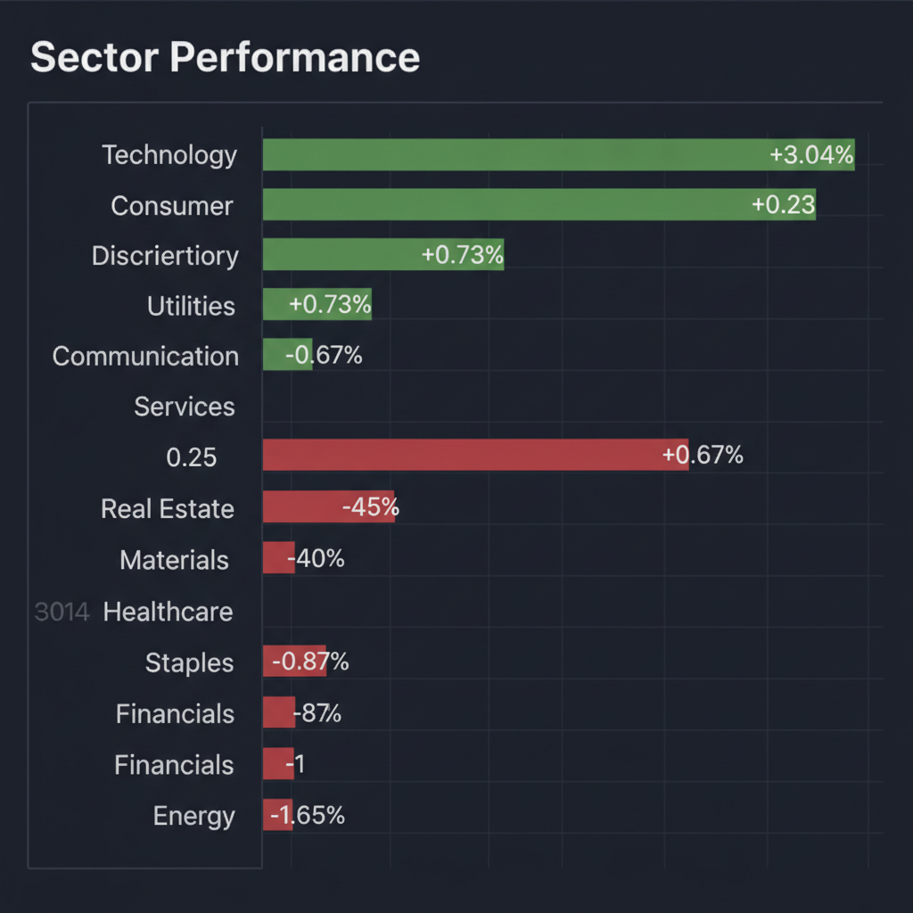
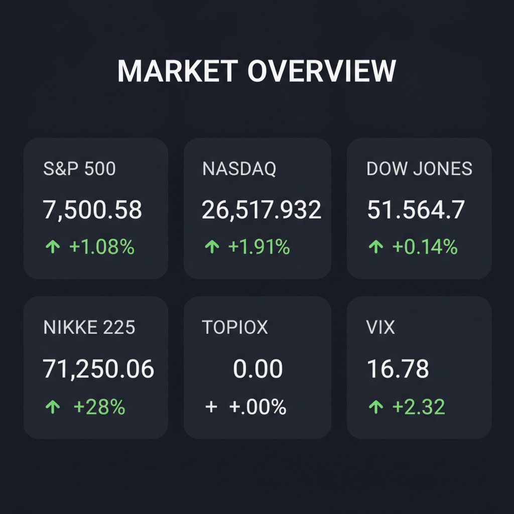

Daily Investment Report - 2026-06-20
Generated: 2026/6/20 7:27:01


投資家向け最終レポート
1. エグゼクティブサマリー
地政学リスクの緩和期待によるリスクオン相場が続いていますが、過熱感とインフレ・政策リスクへの懸念が強まっています。
成長分野への資金流入は依然として活発ですが、市場の脆さは否めず、楽観視は禁物です。
現在はポートフォリオの防衛を優先しつつ、実需を伴うニッチな成長株に絞った選別的な投資が求められます。
2. 注目銘柄リスト
強気（買い推奨）
- 現時点で強気（スコア7.0以上）の銘柄は見当たりません。市場全体の過熱感と不確実性を鑑み、新規の強気評価を控えます。
中立（様子見）
- 今回の分析対象銘柄には中立評価の基準に該当する銘柄はありませんでした。
弱気（警戒）
- 株式会社ハイブリッドテクノロジーズ (4260) [3.2/10]: 黒字転換はしたものの業績が不安定であり、ベトナム拠点の政治経済情勢や人件費高騰リスクが依然として高い。
- 東天紅 (8181.T) [2.6/10]: 割安水準ではあるものの成長性に欠け、流動性も低い。現時点では買い材料に乏しく、株価の停滞が続くリスクが高い。
3. セクター推奨ランキング
1.
テクノロジー（AI・クラウド）: 記録的な資金流入が継続しており、データセンター関連など実需を伴う分野は長期的に強気。
2.
内需系サービス・小売: 国内のインフレ環境下で価格転嫁能力を持つ銘柄が多く、輸出企業より相対的に為替リスクが低い。
3.
防衛関連: 地政学的緊張が完全に払拭されたわけではなく、軍事支出増加の恩恵を受けるため、ヘッジとして機能する。
4.
半導体関連: 高いAI需要がある一方、過熱感と循環的な需要減少リスクがあり、現在は新規エントリーを避けるべき。
5.
エネルギー: イラン情勢緩和による供給不安解消が逆風となる可能性があり、現時点では慎重姿勢が必要。
4. 今週の注目イベント
- 米国：FRB高官の発言による金融政策への示唆
- 米国・イラン：和平交渉の進展およびホルムズ海峡通行に関する続報
- 日本：東京都区部消費者物価指数（CPI）の動向および日銀審議委員の発言
- 日本：主要企業の決算発表および半導体セクターの関連ニュース
5. リスク要因
- 地政学リスクの再燃: イラン情勢の改善が一時的な休戦に過ぎず、交渉決裂によりエネルギー価格が急騰するリスク。
- 政策転換リスク: 日銀が予想外のタカ派転換を行い、急速な円高と株価調整を招くリスク。
- 過度な集中投資: AI・テック株への熱狂的な資金偏重による、調整局面での脆さと相関リスク。
- コスト高の転嫁失敗: 地政学的な緊張継続による防衛費増加やコスト高を、企業が吸収しきれず利益を圧迫するリスク。
6. アクションアイテム
- ポートフォリオの利益確定を行い、キャッシュポジションを通常より10〜15%引き上げ、急落時に備えること。
- テクノロジー関連の過熱銘柄については、ストップロスを設定し、出来高の減少を確認次第、部分的に売却すること。
- 日本株においては、円安の恩恵を受ける輸出株から、価格転嫁力の強い国内内需株へのシフトを検討すること。
- VIXコールオプションや金（ゴールド）の保有により、市場の突発的なボラティリティ上昇に対するヘッジを構築すること。
7. 米国株インデックス戦略
- 現在の市場環境の評価: インデックスは高値圏にあり「過熱」のサインが見られます。一部利益確定を行い、現金比率を高める「リスクオフ」への準備を強く推奨します。
- 今後1〜3ヶ月の見通し: 短期的には楽観論が続く可能性がありますが、金利高止まりや地政学リスクの再燃により、夏から秋にかけてボラティリティが拡大する可能性が高いです。
- 積立投資への影響: 定期積立は継続すべきですが、一括投資やスポット買いは控え、現在の高いバリュエーションでの購入は抑制的に行うのが賢明です。
- 注意すべきイベント: FOMC（連邦公開市場委員会）での政策決定、雇用統計、および決算シーズン。これらはインデックスのトレンドを左右する大型イベントとして注視が必要です。
- リスクシナリオ: 地政学リスクの顕在化による「リクイディティ・クライシス」が発生した場合、インデックスは10%以上の調整を起こす可能性があります。その際は、パニック売りを避け、歴史的なサポートラインでの買い増し機会と捉える準備をしてください。
※本レポートは提供された市場データと分析に基づいたものであり、投資勧誘を目的としたものではありません。投資判断は最終的にご自身で行ってください。
Agent Scoring Matrix（Web調査後の合議評価）
各エージェントがWeb調査結果を踏まえて独立に10段階評価した結果です。平均7以上=強気、4〜6.9=中立、4未満=弱気。
| 銘柄 |
ファンダメンタルズアナリスト | テンバガーハンター | マクロエコノミスト | テクニカルストラテジスト | リスクマネージャー |
平均 |
判定 |
| 4260 |
4
黒字化も業績不安定、ベトナムリスク懸念 | 3
黒字化も収益不安定、リスク大 | 3
黒字転換も業績不安定、リスク高い | 4
赤字縮小も収益性不安定 | 2
業績不安定、リスク高く推奨不可 |
3.2 |
弱気 |
| 8181.T |
3
割安だが成長性低く、流動性リスク大 | 2
成長性皆無、割安だがリスク高 | 2
低成長、株価停滞、割安だが魅力乏しい | 3
成長性乏しく割安感限定的 | 3
成長性乏しく、現値は割高感も |
2.6 |
弱気 |
Web Research Results (Google Search Grounding)
エージェントが推奨した中小型株について、Google検索で最新情報を調査した結果です。
8181.T
東天紅（8181.T）に関する最新情報は以下の通りです。
1. 企業概要
東天紅は、レストランおよび宴会場の経営を主たる業務としている企業です。東京証券取引所のスタンダード市場に上場しており、業種は小売業に分類されます。時価総額は27億円です（2026年6月時点）。
2. 直近の業績・決算情報
2026年2月期の通期決算情報によると、Refinitivのデータでは、2025年11月期の第3四半期単体利益は2.75億円（前年同期比0.9%減）でした。2026年2月期の通期予想では利益4.4億円（前年同期比2.3%増）を見込んでいます。
2026年2月期時点でのEPS（1株当たり利益）は240.77円、PER（株価収益率）は5.81倍、ROE（自己資本利益率）は8.37％です。
3. 最新ニュース・材料
直近1〜2週間で東天紅（8181.T）に特化した重要なニュースは見当たりませんでした。最新の決算に関する情報は2026年4月13日にRefinitivによって更新された2026年2月期通期単体のものでした。
4. アナリスト評価・目標株価
東天紅（8181.T）に関する個別のアナリスト評価や目標株価は、今回の調査では確認できませんでした。
5. リスク要因
財務状況を見ると、有利子負債が2,790百万円、有利子負債倍率が37.77％、自己資本比率は65.4％となっています。これらの数値は財務の健全性を示す一側面ですが、競合環境や規制に関する具体的なリスク要因は今回の情報からは特定できませんでした。
6. 株価の最近の動き
東天紅の株価は、2026年6月19日時点で1,008円です。直近の動きとしては、2026年1月14日に年初来高値1,150.0円を記録し、2026年6月1日には年初来安値950.0円を記録しました。
過去5日間では株価は+5.53％、過去20日間では+1.58％の上昇を示しており、年初来安値からやや回復傾向にあります。2026年6月上旬の株価は967円から973円の範囲で推移していました。
4260
株式会社ハイブリッドテクノロジーズ（証券コード: 4260）に関する最新情報は以下の通りです。
1. 企業概要
* 事業内容: 株式会社ハイブリッドテクノロジーズは、日本とベトナムを融合させた「ハイブリッド型サービス」を軸にソフトウェア開発を行っています。具体的には、新規事業・サービス開発支援、UX・UIデザイン、ラボ型開発、AI開発、クラウド導入支援などを手掛けており、ベトナムのリソース活用に強みを持っています。
* 時価総額: 2026年6月19日時点で、時価総額は約29.3億円です。
* 業界でのポジション: 東証グロース市場に上場しており、情報・通信業に分類されます。企業のソフトウェア開発を専属体制で支援し、開発・実装はベトナム拠点が担っています。
2. 直近の業績・決算情報
* 2026年9月期 第2四半期（1-3月）: 連結最終損益は2200万円の黒字に転換しました（前年同期は800万円の赤字）。売上営業利益率は、前年同期の2.5％から8.4％に改善しています。
* 2026年9月期 第1四半期（10-12月）: 連結最終損益は6400万円の赤字でした。
* 2026年9月期 連結中間決算: 税引前損益は67百万円の黒字を計上しています。
* 2025年9月期 連結最終利益: 1900万円で、前年同期比64.7%減となりました。
3. 最新ニュース・材料
直近1～2週間で、投資判断に大きな影響を与えるような特筆すべき企業固有のニュースは見当たりませんでした。
4. アナリスト評価・目標株価
現在のところ、具体的なアナリスト評価や目標株価に関する情報は見つかりませんでした。
5. リスク要因
* 財務上の懸念: 2026年9月期第1四半期では赤字が拡大し、2025年9月期も減益となっており、収益性の改善が課題となる可能性があります。
* 事業構造: ベトナムのリソース活用に強みを持つため、ベトナムの政治経済情勢、為替変動、人件費高騰などがリスク要因となる可能性があります。また、情報・通信業として、技術革新の速さや競合他社の動向も常に考慮すべきリスクです。
6. 株価の最近の動き
* 2026年6月19日時点の株価は255円です。
* 年初来高値は356.0円（2026年1月16日）、年初来安値は246.0円（2026年6月2日）となっています。
* 直近の株価は年初来安値を更新した後、やや反発の動きも見られますが、全体的には軟調なトレンドで推移しています。